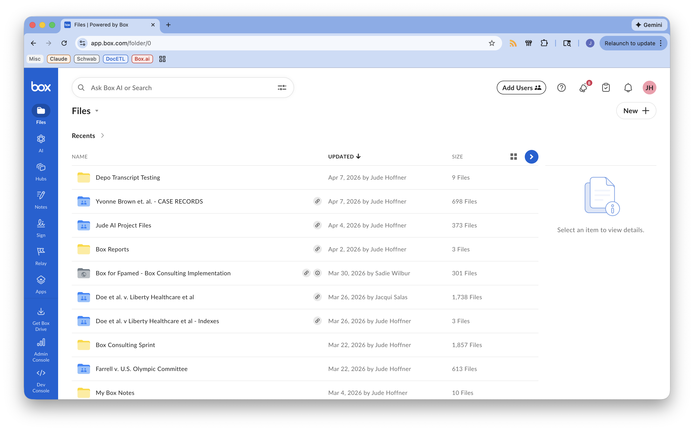

fpamed
AI Strategy & Update
Box Platform · April 2026
Topics
- IUnderstanding the Box "Platform"
- IIAligning fpamed Opportunities to the Box Platform
- IIIStatus: Workflow Automations Project
- IVLooking Ahead
You're paying for two products.
Most customers only use one.
Box Web App
File storage, retrieval, team collaboration, on-demand AI Q&A, AI Studio. Where every fpamed team member interacts with Box day to day.
Box Developer Platform
Custom applications built on Box APIs. Automated pipelines, structured AI outputs, bespoke workflows engineered to specification.
One layer is built for non-technical users: configurable, accessible, standardized. The other is built for builders: tools to build custom applications for unique use-cases not integrated into the web app.
What each layer looks like.

1000's of features, available to any team member with no engineering required. On-demand AI assistants inside Box — including custom agents built by and for fpamed.

Where custom applications are built — automated pipelines, structured AI outputs, bespoke workflows needing to run on Box infrastructure.
Opportunity (ROI) fits into two categories.
AI as a force multiplier
for fpamed's people
AI and LLMs that make every fpamed persona — experts, ops, admin — more effective in their existing work. On-demand, interactive, available in the tools they already use.
AI as automated
operational infrastructure
Narrowly defined, repeatable workflows where AI replaces manual labor, reduces vendor dependency, or creates new service capacity. Built once. Runs automatically.
SaaS product architecture
designed for this type of split.
One subscription. One security perimeter. Two Box Platform surfaces.
Hypothesis:
Web App was holding us back.
Two workflows in production.
Med Chron on Roadmap.
Document Index
Pick a case folder. AI-extracted dates and descriptions for every PDF. Formatted Excel index filed back to Box automatically.
Deposition Summary
Pick a transcript. Topics, summaries, legal significance tags. Excel and navigable PDF both filed back to Box.
Medical Chronology
Architecture established. Spike phase: validating Box AI against real source material before building.